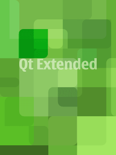

Qt Extended SDK Release NotesQt Extended® SDK is a virtual machine created to run with VMware® Player.
Please download and install the latest free VMware Player
before continuing with the install. License informationPlease note that this .iso file contains additional software for use in conjunction with the Qt Extended SDK. This software is licensed under a variety of different licenses. The additional software contained in this .iso file is licensed for use under a variety of licenses including the GNU Lesser General Public License (LGPL) or the GNU General Public License (GPL). These license agreements are available at: http://qtextended.org."DocumentationMore information on SDK updates, applications and downloads is available at http://qtextended.org Release NotesQt Extended release notes are available at http://doc.trolltech.com/qtextended!QPE_URL_VERSION!/release-index.html and from Assistant inside the VmPlayer environment.Build informationThis package contains Qt Extended Version: !QPE_VERSION! |